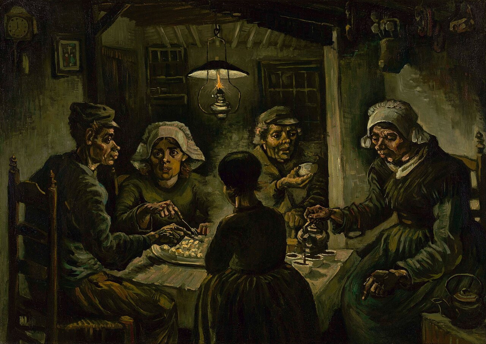
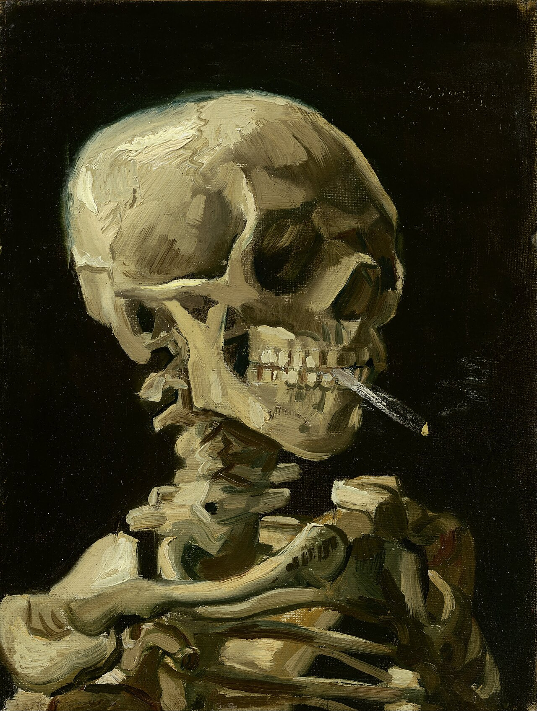
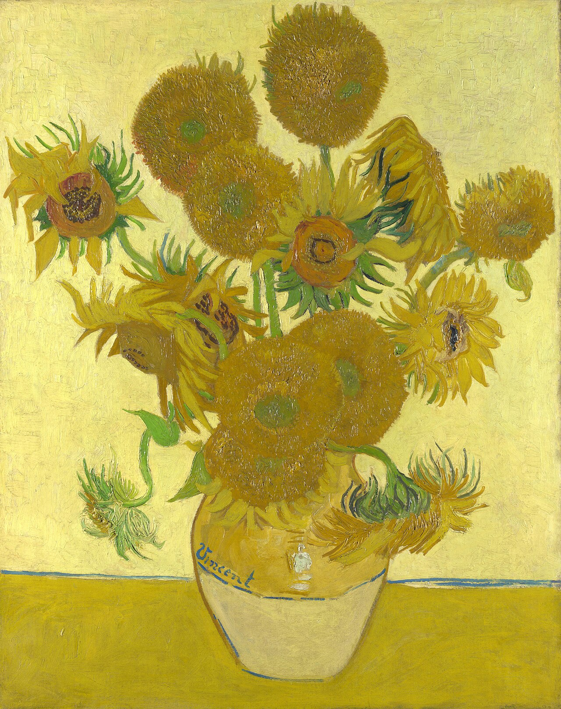
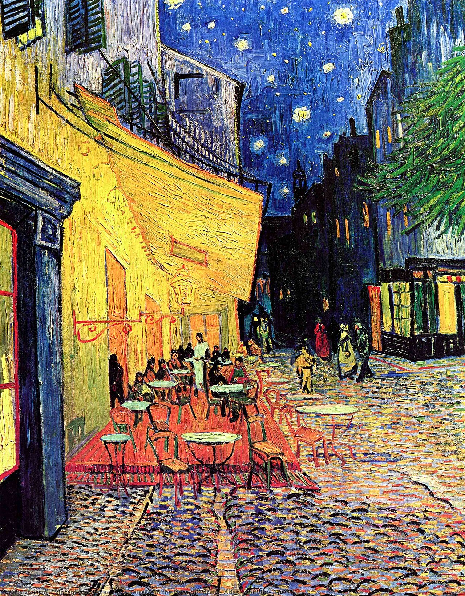
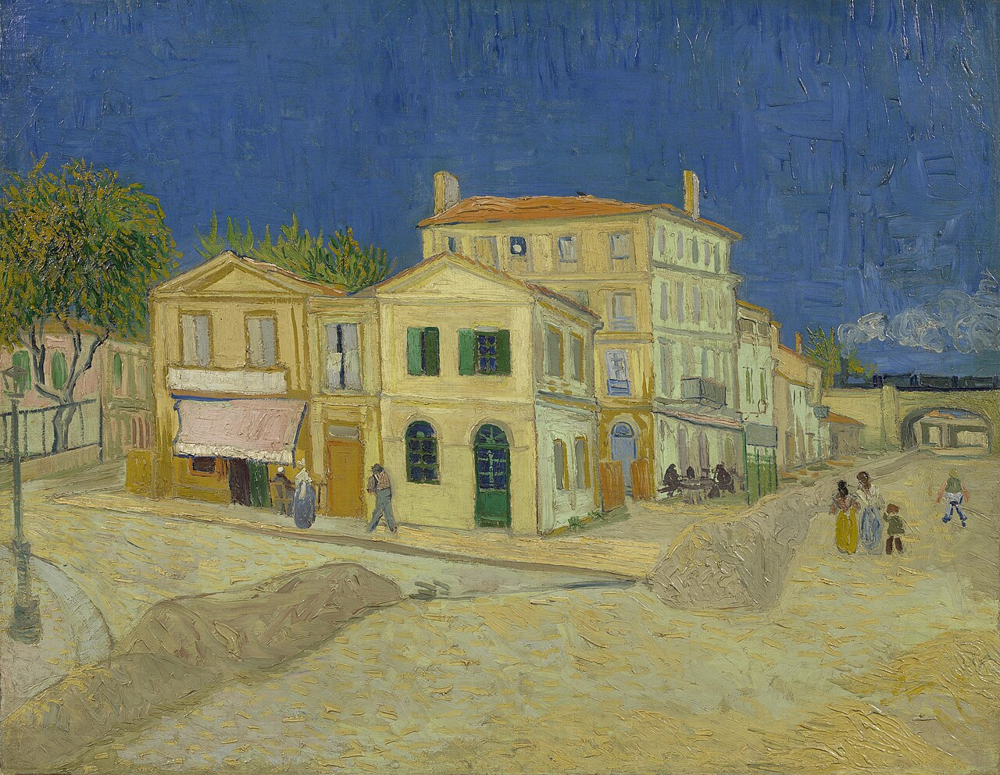
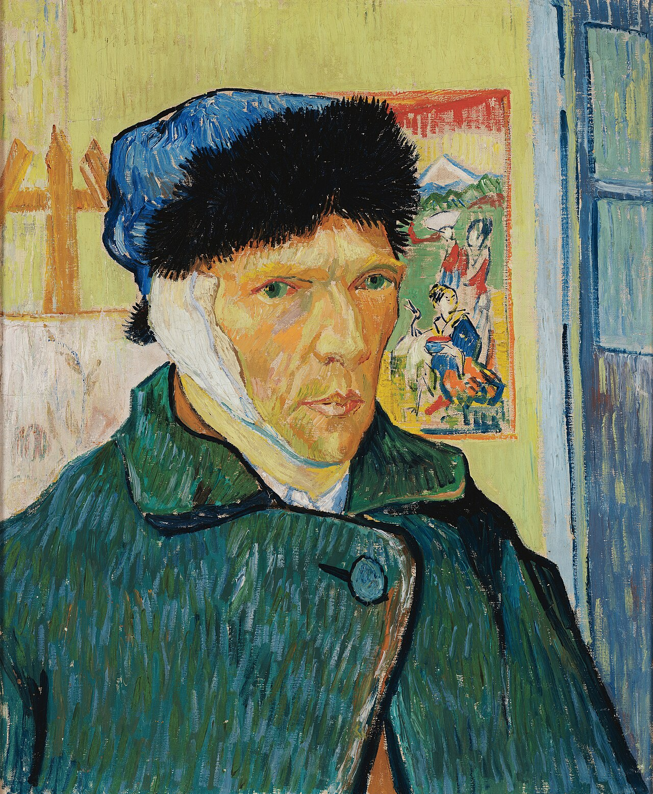
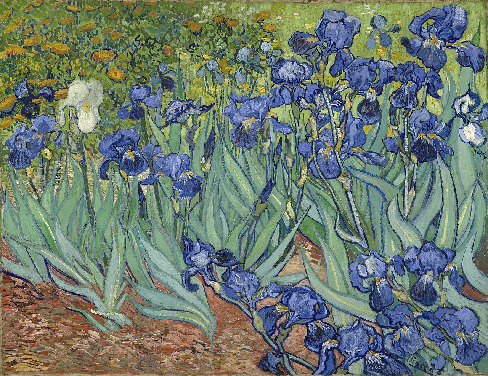
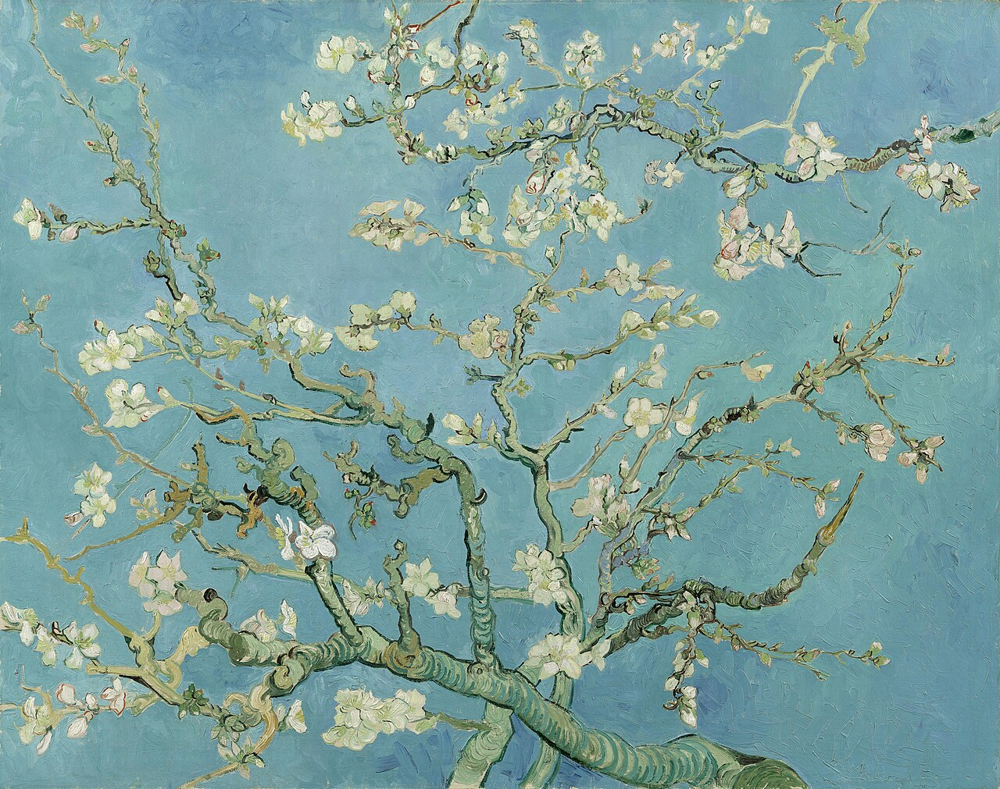
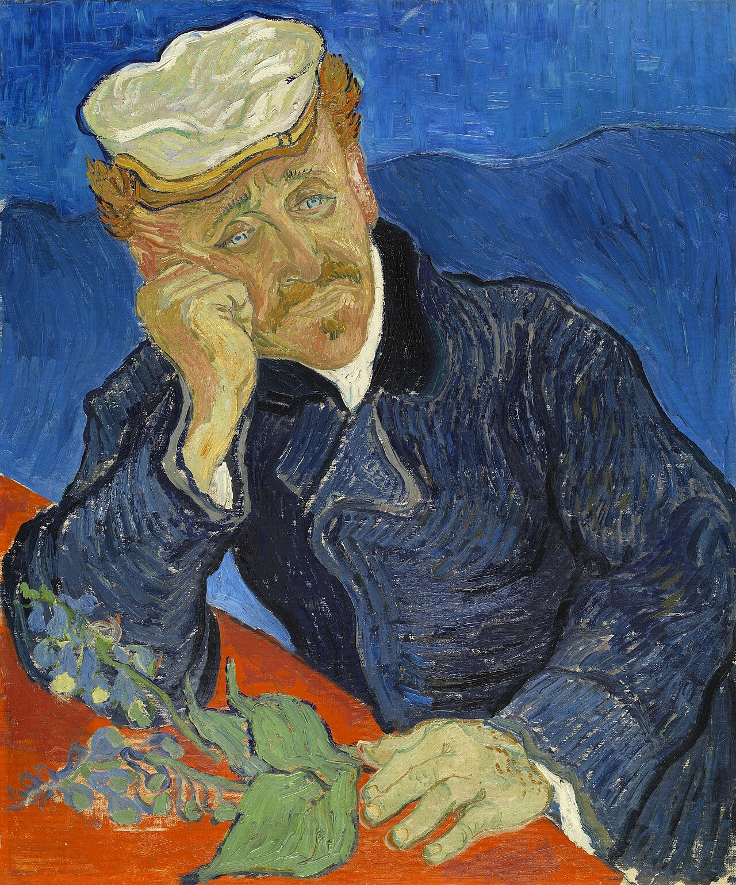
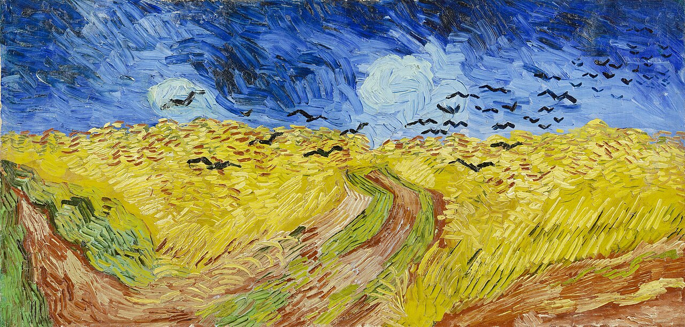

Vincent van Gogh was born in 1853 in Groot-Zundert, a village in the south of the Netherlands. He failed as an art dealer, as a teacher, and as a preacher before he picked up painting seriously around 1880, at age 27. He then produced roughly 900 paintings in ten years, sold about one of them in his lifetime, and died in 1890 at 37. The whole arc is visible if you walk through the work in order. That is what this page does.
The Potato Eaters
Van Gogh spent two years living with his parents in Nuenen, drawing weavers and farm laborers. He wanted to be a painter of peasant life in the tradition of Millet. The Potato Eaters, from April 1885, was his first attempt at a major work. The palette is deliberately dark and earthy, and the hands are as worked as the faces. He wrote to his brother Theo that he wanted the picture to show people who "have dug the earth with the same hands they put in the dish."

.jpg){kind=link}
Skull with a burning cigarette
He enrolled briefly at the academy in Antwerp, clashed with his instructors, and painted little that survives. This small canvas is the famous exception. It is probably a joke at the expense of academic drawing exercises, which had students copy skeletons endlessly. It is also the first painting of his that feels like a personality rather than a program.

{kind=link}
Self-portrait with grey felt hat
In March 1886 he moved into Theo's apartment in Montmartre and met the moderns: Pissarro, Toulouse-Lautrec, Signac, Gauguin. In two years his palette went from brown to full color. Too poor to pay models, he painted himself more than twenty times in Paris. This self-portrait from the winter of 1887 to 1888 shows him applying pointillist ideas his own way, with strokes that radiate around the head instead of sitting in a neutral grid.

{kind=link}
Sunflowers
In February 1888 he left Paris for Arles in the south of France, chasing stronger light and cheaper rent. The fifteen months that followed are one of the most productive stretches any painter has had, around 200 paintings. In August 1888 he painted the sunflower series to decorate the room he was preparing for Gauguin, who had agreed to join him. Yellow on yellow on yellow was a technical dare as much as a decoration.

{kind=link}
Cafe Terrace at Night
Painted in September 1888 on the Place du Forum in Arles. It is his first night sky on canvas, done on site without using any black. He wrote to his sister Willemien that night is "more richly colored than the day." The cafe still exists and trades on the painting.

{kind=link}
The Yellow House
He rented four rooms in this house on Place Lamartine and dreamed of it becoming a "studio of the south," a colony of painters. The dream lasted nine weeks. Gauguin arrived in late October 1888, the two argued constantly, and on the night of 23 December Van Gogh cut off part of his left ear. Gauguin left and never saw him again.

.jpg){kind=link}
The Bedroom
His own room in the Yellow House, painted in October 1888 while he waited for Gauguin. He told Theo the flat planes of color were meant to express rest. He liked the composition enough to paint it three times; this is the first version. The walls were originally violet and have faded toward blue because the red pigment was unstable.

{kind=link}
Self-portrait with bandaged ear
Painted in January 1889, a few weeks after the ear incident, back at his easel in the Yellow House. He shows himself in a winter coat and fur cap, calm, with a Japanese print on the wall behind him. The painting reads as a statement that he was still working. Within months the neighbors petitioned to have him confined, and he chose to enter an asylum voluntarily.

{kind=link}
Irises
He entered the asylum of Saint-Paul-de-Mausole in Saint-Remy-de-Provence in May 1889 and started painting its garden within the first week. Irises came out of that week. In 1987 it sold at auction for 53.9 million dollars, at the time the highest price ever paid for a painting. He never knew a market like that existed for him.

.jpg){kind=link}
The Starry Night
Painted in June 1889 from his asylum room, partly from the view out the barred window and partly from memory and imagination. The village is invented, the cypress is enlarged, the sky is the subject. He considered it a failure, an abstraction that had gone too far. It is now the most reproduced painting he made.

{kind=link}
Almond Blossom
In January 1890 Theo's son was born and named Vincent Willem after his uncle. Van Gogh painted this branch of almond blossom against a sky blue background as a gift to hang above the baby's bed. Almond trees flower earliest in Provence, so the picture is about a new life arriving before spring. The family kept it, and it anchors the Van Gogh Museum collection today.

{kind=link}
Portrait of Dr. Gachet
He left the asylum in May 1890 and moved to Auvers, north of Paris, to be near Theo and under the care of Dr. Paul Gachet, a physician who collected art and treated artists. In his last 70 days he painted around 70 canvases. He painted Gachet in June with what he called "the heartbroken expression of our time." In 1990 the portrait sold for 82.5 million dollars, again a world record.

{kind=link}
Wheatfield with Crows
One of the double-square canvases from his final weeks in July 1890. It is often called his last painting, which is probably wrong, but the myth stuck because everything in it reads as an ending: a storm sky, three paths that resolve nothing, crows over the wheat. He wrote that these wheatfields expressed "sadness and extreme loneliness," and also that the country air was doing him good. Both sentences are from the same period. On 27 July 1890 he shot himself in the chest in the fields outside Auvers and died two days later with Theo at his side. Theo died six months after that, and it was Theo's widow, Jo van Gogh-Bonger, who spent the next three decades publishing the letters and placing the paintings until the world caught up.

{kind=link}
All images are public domain, from Wikimedia Commons, hosted with this post.